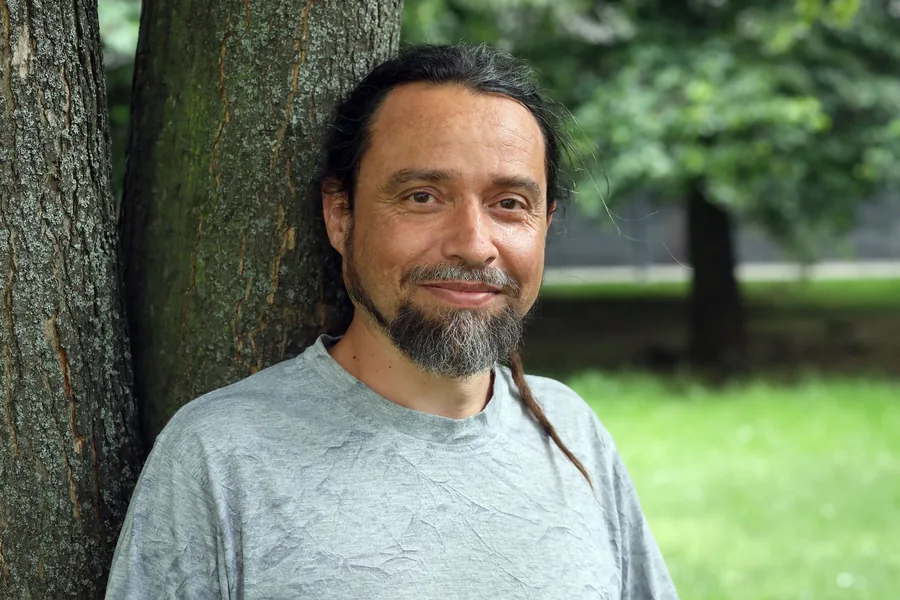
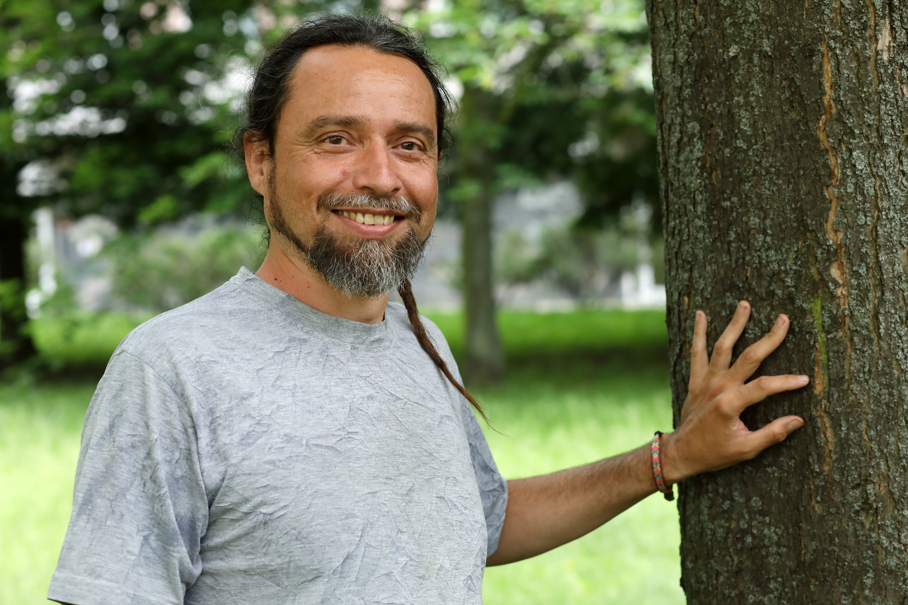

Gestalt terapie
Pracujeme s tím, co se děje teď a tady – ve slovech, v těle i emocích. Uvědomíte si vzorce, které vás omezují, a získáte větší svobodu ve svých reakcích.
Individuální a párová terapie v Kyjově i online. Bezpečný prostor, kde se věci začínají měnit.

Mnoho lidí přichází s pocitem, že by měli svůj problém zvládnout sami. Ale říct nahlas „potřebuji pomoc" je někdy ta nejsilnější věc, kterou můžete udělat.

Pocházím z Kyjova. Vystudoval jsem psychosociální studia a teologii na Husitské teologické fakultě UK v Praze, kde jsem také dlouho žil. Vystřídal jsem různorodé práce – pracoval jsem s duševně nemocnými, s bezdomovci, se seniory i třeba jako kuchař či zahradník.
Díky dlouholeté praxi osobního rozvoje a vlastním zkušenostem s náročnými psychickými stavy vnímám hluboce křehkost a zranitelnost naší psychiky. Praxe meditace mi zároveň pomohla získat hlubší vhled do struktury a dynamiky jejího fungování.
Při práci vycházím z výcviku v integrativní gestalt terapii. Inspiruje mě C. G. Jung a praxe všímavosti. Snažím se ke každému přistupovat s otevřenou myslí a pochopením – věřím, že podstatná není použitá technika, ale vzájemný vztah a důvěra.
Posiluje mě příroda, práce na zahradě a hudba.
Terapie funguje, když si vzájemně sedneme. Tady je pár věcí, které ke mně klienti oceňují.
Ke každému přistupuji s otevřeností a respektem. U mě není nic, za co byste se museli stydět.
Prošel jsem výcvikem integrativní gestalt terapie v INSTEP a mám za sebou stovky hodin práce s klienty.
Nevnucuji jednu metodu. Integruji gestalt, jungovskou psychologii i mindfulness – a přizpůsobuji je konkrétnímu člověku přede mnou.
Terapii nabízím v terapeutické místnosti v Kyjově nebo videosezením odkudkoliv. Volba je na vás.
V rámci integrativního přístupu mám za to, že není až tak podstatné, jakou terapeutickou školu či techniku používáme, ale spíše jak k sobě dokážeme být otevření a vnímaví.
Pracujeme s tím, co se děje teď a tady – ve slovech, v těle i emocích. Uvědomíte si vzorce, které vás omezují, a získáte větší svobodu ve svých reakcích.
Prozkoumáváme hlubší vrstvy psychiky – sny, symboly a archetypy. Pochopením vlastních vzorců a stínových stránek osobnosti nacházíte cestu k sobě samému.
Techniky všímavosti vám pomáhají zakotvit se v přítomnosti a reagovat vědomě místo automaticky. Klidnější mysl pro každodenní výzvy.
V terapii je u mě podstatný rozhovor o tom, co se děje teď a tady – nejen ve slovech, ale i se zaměřením na tělesné projevy a emoce. K pochopení toho, co se odehrává v přítomnosti, ale také často potřebujeme otevírat témata minulosti.
Pokud je to na místě a máme dostatečnou vzájemnou důvěru, můžeme spolu nacvičovat všímavost, relaxaci, věnovat se vizualizacím, snům nebo jemné imaginaci.
Od prvního e-mailu po pravidelná sezení – jednoduše a bez zbytečných formalit.
Pošlete krátký e-mail – stačí pár vět o tom, co vás trápí nebo co hledáte. Odpovím do 48 hodin.
Domluvíme termín prvního sezení – online nebo osobně v Kyjově. První sezení je bez závazků.
Poznáme se, povíme si, co vás přivedlo. Pokud si sedneme, domluvíme pravidelná sezení ve vašem tempu.
„Děkuji a doporučuji. Citlivý a inspirativní přístup."
Píši o psychologii a sdílím své zkušenosti veřejně.
Píši o psychologii, sebepoznání a duševním zdraví pro čtenáře jednoho z největších psychologických portálů v ČR.
Psychologie.czVideo rozhovor, ve kterém sdílím svůj pohled na psychospirituální krizi – její příčiny, projevy a možnosti práce s ní.
Diversity · YouTubeVěnuji se také psaní. Vydal jsem několik knih na téma sebepoznání a vnitřního rozvoje.
Databáze knihKaždé sezení trvá 50 minut.
Videosezení odkudkoliv
1 100 Kč / 50 min
Pohodlná terapie z domova přes videohovor na dohodnuté platformě.
Kyjov
1 200 Kč / 50 min
Osobní setkání v bezpečném a klidném terapeutickém prostoru.
Platba hotově, převodem nebo kartou
670100-2200180295 / 6210 (mBank)
Online sezení – platba předem do 24 h před sezením
Osobní sezení – předem převodem nebo na místě v hotovosti
Odpovědi na to, co klienti nejčastěji chtějí vědět před prvním sezením.
Pracuji pouze s dospělými klienty od 18 let.
Povíme si, co vás přivedlo, a já vám řeknu, jak pracuji. Žádný tlak – zjistíme, zda si vzájemně sedneme. První sezení je bez závazků a bez nutnosti pokračovat.
Ne. Někteří klienti přicházejí s jasnou otázkou, jiní jen tuší, že něco nefunguje, nebo chtějí lépe porozumět sami sobě. Obojí je v pořádku – začneme tam, kde jste.
Samozřejmě. Vše, co si řekneme, zůstane mezi námi. Mlčenlivost je základem terapeutické etiky a pro mě naprostá samozřejmost.
Záleží na vás a vašich potřebách. Někdy stačí pár sezení k ujasnění situace, jindy je vhodná delší spolupráce. Tempo a délku terapie určujete vy.
Ano. Terapie není závazek na celý život. Kdykoli můžete rozhodnout o přestávce nebo ukončení spolupráce – ideálně to probereme společně, aby bylo zakončení pro vás smysluplné.
Nejlépe prvním sezením. Pokud si po něm nebudete jisti, je to v pořádku – výběr terapeuta je osobní věc. Dobrý vztah s terapeutem je základem fungující terapie, a to vím z vlastní zkušenosti.
Napište mi pár vět o tom, co vás přivedlo. Odpovím do 48 hodin.
Napsat e-mailNapište mi pár vět – odpovím do 48 hodin.
Bohuslavice 4027, 696 55 Kyjov · Jihomoravský kraj
Videohovor na dohodnuté platformě